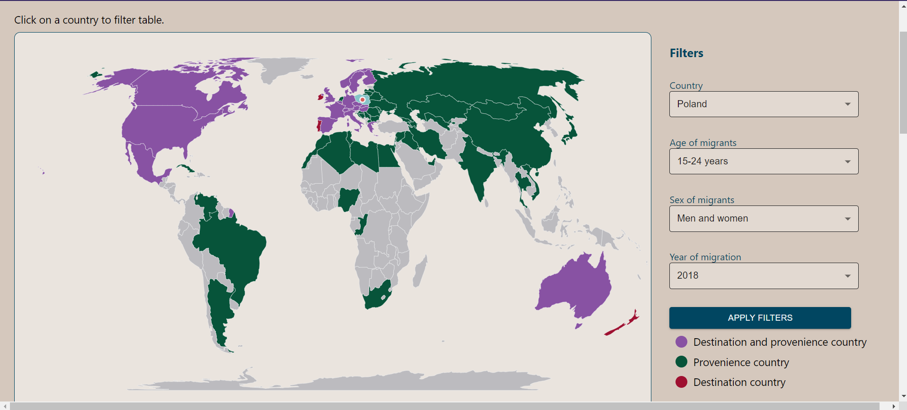

This is a technical report which presents information about the APIs that are going to serve the MIR application, about the structures of data that we use and about the overall implementation of the project.
Migration Reporting Tool is a Web system that is capable to generate in real-time an interactive map regarding the migrations performed by humans (with the possibility of extending with data about other species) in a specific context. The application will also deliver useful statistics and visualizations about the migratory habits of specific species and all this information will be offered by a SPARQL endpoint (also enhanced by additional knowledge provided by DBpedia / Wikidata).
This technical report was created with the purpose of explaining how the application can be used by the users, a general description of its structure and components, how the APIs are created and what kind of data we use and where is it from. The information about all these will be gradually added as we progress with the development.
Details about development:
The applincation lets the user explore migration map, visuals and statistics for humans (for now). It is also extensible for data about other species. The choice of species cand be made by the user among available species at the time.
Once the user makes a choice, he will be able to visualize data about migrations in two sections: live and history. For the both sections there are some filters that can be applied. For the history tab there are also statistics and charts are available for the data requested.
The users can also register some data regarding migration events that they know or maybe they were involved in.
Our Front End is developed using React, a JavaScript library for building interfaces, powered by Meta Platforms, Inc. The main libraries that we used are:
On the first page that users see, there will be the following components:
Another page is the one where user can explore migration map. It has two tabs:
The page where user can add data is composed of:
In this project our API implemented in Flask (Python based) it is a layer between our FrontEnd and the Apache Jena Fuseki TripleStore. The API provided by the server is used in general for performing GET operations in order to retrieve the data for generating the map and statistics. However, since the user can also add some data about migrations there are also POST operations available. Complete details about these can be found in our OpenAPI specification.
However, the API performs three main operations:
We store the dataset provided by OECD API. This dataset is based on filters (like years, countries, etc), so our database is stuctured in the same way. We processed it and changed it to fill up our requirements. After that we modeled it using RDF (rdflib library from python) in order to create our ontology. We stored this as a RDF/Turtle file, which was loaded into Apache Jena Fuseki TripleStore.
The description of our models:
Each country has its own node containing the name of the coutnry and the coordinates. The migration model is linked with each destination and origin countries models. As vocabularies we used schema.org and FOAF. We also used DBpedia resources as URIs for each country.
Our dataset contains 536568 migration events. We created this graph using just 10000 migration events:
Let's simply it by using just 10 migration events. We can see a lot of contries with no conections.
Now, let's take a look at one migration event. The migration model is linked with the each contry's model.
SELECT migrations:

As you can see, in our API, this query contains some parameters, such as age, gender and country, these parameters are default setted to "All ages", "Men and women" and "All years". The year filter is added just if the call from the FrontEnd contains this filter. This query is this big because we wanted to return all details about each data. We tried different versions and we picked the fastest one.
INSERT migration:
This query contains an "INSERT" for every triple that needs to be added for one migration.
We also have a SPARQL call for selecting filter values:
"The OECD provides access to datasets in the catalogue of OECD databases through a RESTful application programming interface (API) based on the SDMX-JSON standard. This allows a developer to easily call the API using simple RESTful URL programmatically." - API Documentation. So, we'll use this API in order to update our dataset with fresh migration data. We can call this API or just download CSVs form its webpage, to store datasets filtred by age, country, year, occupation, education, etc. This resource contains datasets only for the human migration part.
In these section we will present the three main flows that a user can complete in our web application.
You can acces this page by clicking the "VIEW MIGRATION MAP" button from the main page. This is the page where you can explore details about migration events among years and between different countries. The migrations that are displayed are automatically filtered by a country (marked with a pin on map), and there are also addition filters that can be applied: number of migrants, year of migration, age of migrants, sex of migrants.
The default country filter is Romania.The legend explains what the colors that you can see on the map mean.
To apply filters, you have to select your options from the dropdowns and click the "APPLY FILTERS" button. Example of filtering:
Under the map you can see a table which contains all migration events that atch yor filtering.
The map is interactive, meaning that you can click on a country to see it's name and also to add one more filter yo the table.
When you select a country, it's name will be displayed and it will be colored with dark blue on the map.
Example on the previous filter selection and United States of America highlighted on the map:
You can also analyse two different types of charts: a bar chart and one or two piecharts.
The barchart is plotted on a top 10 by total number of individuals that migrated between two countries on filtered data. It shows for each of these countries the number if immigrants and the number of emigrants reported to the selected country.
There are two available piecharts: one that shows you the proportions between the number of immigrants from each country and one that shows you proportions between the number of emigrants to each country. This is why in some cases there might not be two of them: if, for example, there are no countries for which we have emigrants, there will be no chart about this.
The colors of the pie charts are randomly generated.
Here you can see an interactive map showing the migration events that are happening at the time you are watching the map. Each marker position is updated in real time. You can hover any marker on the map and see details about that specific event. The markers disappear once the migration is completed.
Next to the map you can see a list of cards that display details about each pending migration event, together with the progress percentage that is also updated in real time.
You can hover one of the cards from the list and it will become highlighted. This will also highlight the corresponding countries on the map with the same color.
Above the map you will se a dropdown with country names. This allows you to filter the live events that you see on the map on a country. Nothe that is's possible that at the time you are watching, for a specific country there are no migration events.
There is a color code here. If the marker is green, it means that individuals are migrating TO the selected country. If the marker is red, it means that the individuals are migrating FROM the selected country.
On this page you are able to add a new migration event. Assuming that you will probably want to enter a migration event you were part of, the application will request permision to your location and automatically fill the destination field with the name of the country you are in. This can be changed if it's not the case.
You will not be allowed to add an event without introducing all mandatory fields that are marqued with *. If you try, a warning message will be displayed.
If everything is filled and you click "ADD EVENT" a request will be made. If it's successful you will see a success message and this means the action was performed.
If any error happens, you will see an error message.
As future work, this application can be extendend for exploring migration events for different catregories of individuals. For now we only use data for human beings, but it will be very useful to give the user multiple possibilities. Considering the fact that our initial goal was to also use data for birds, this can be added as well as other species.